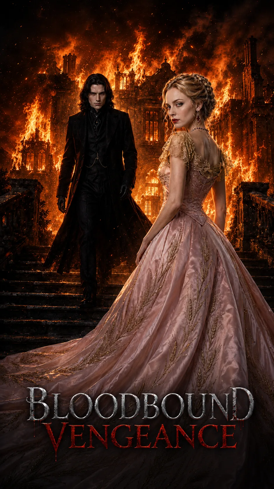

Bloodbound Vengeance
《血色契约》海报与视频素材
Bloodbound Vengeance Visual Assets
哥特吸血鬼题材短剧视觉资产，包含横版主视觉、竖版封面和视频素材。画面围绕暗夜、复仇、亲密关系和城堡空间展开，重点处理人物关系、标题安全区、横竖版适配和统一氛围。
Visual assets for a gothic vampire short drama, including horizontal key visuals, vertical covers, and video materials. The work focuses on mood, character tension, title-safe layout, and format adaptation.
重点：同一题材下的多比例视觉适配，横版主视觉和竖版封面完整展示。
Focus: format adaptation across horizontal key visuals and vertical covers.
产出：海报 KV、宣发封面、视频素材预览。
Outputs: posters, campaign covers, and video previews.
